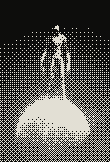

About
I'm Sharan Senthil, a student at Central Bucks South High School in Pennsylvania. I'm interested in computer science and computational biology, and I'm also drawn to finance. I like projects where I get to figure out how a system actually works, and then build something with that.
Outside of school and research I really like video games.
Timeline
Lead Mentor, Central Bucks South STEM Research Club
President, Central Bucks South Science Olympiad
Merchandise Director, Student STEM Experiential Learning Foundation (SSELF)
IT team, SSELF
Math and reading assistant, Kumon. Helped students aged 4 to 16 build foundations through guided practice.
Honors
- USACO Gold, USA Computing Olympiad, Feb 2026
- Certificate of Achievement, Delaware Valley Chapter PDA, Jun 2026, for my peanut-allergy peptide research
Contact
Email is the easiest way to reach me: montage.kolash@gmail.com.